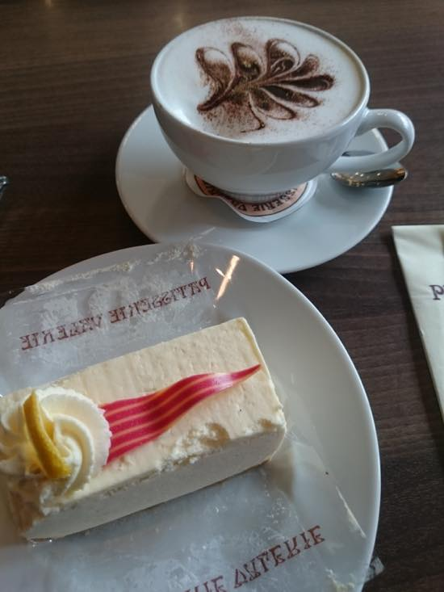
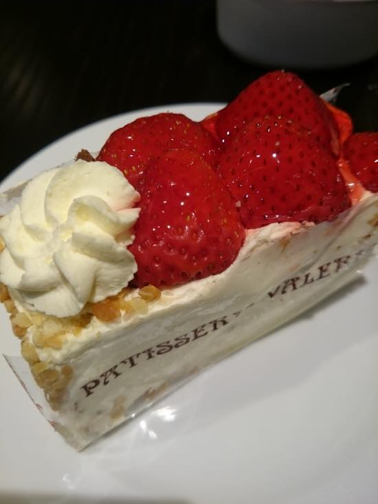
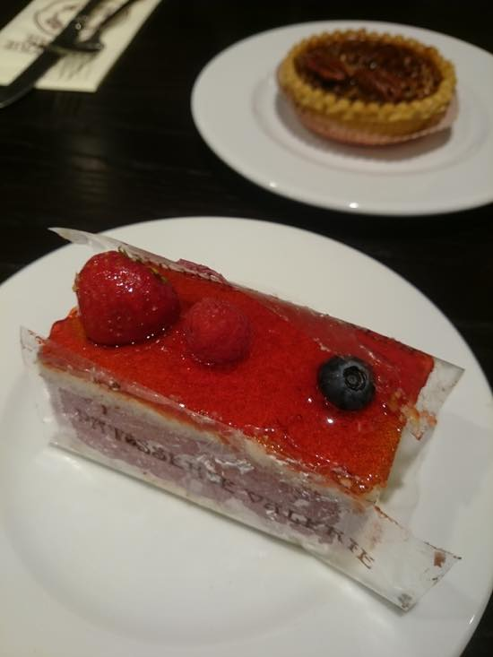
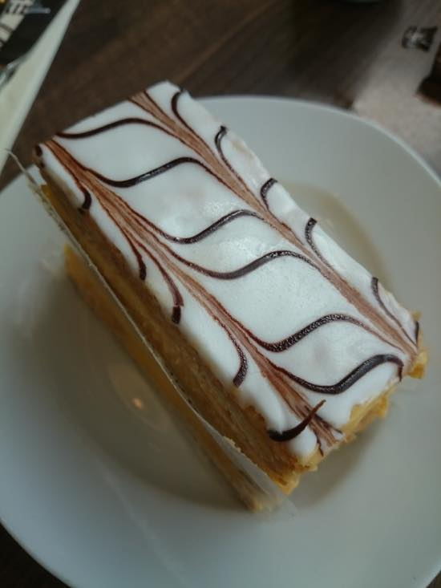

짧게 찍어본 런던 센트럴 옥스포드 서커스 Debenhams 지하에 있는 파티세리 발레리 카페
좋아하는 케키집 & 카페 입니다.
식사 메뉴도 좋아해요 :)
에그 베네딕트 라던가 치즈 & 토마토 크로아상 도 좋아합니다 //ㅂ// 적립카드 있었음 벌써 여러번 공짜커피 마실수 있었을텐데 ^^;;
커피숍에서 주로 라떼마시는데 여기는 어째서인지 항상 카푸치노를 주문합니다 헷헷 커피도 맛나요//

카푸치노 & 치즈케키

딸기 밀푀유가 먹고싶었는데 다팔렸다고 해서 그럼 딸기들어간 케키 아무거나 남은거요 - 라고 해서 받아본것

믹스베리무스 이거 맛있음//

완죤 꾸덕하고 크림으 꾸악 차 있는 밀푀유
혼자서 끝까지 다 먹어본 기억이 없습니다
하나 주문해서 둘이먹어도 충분한 양 -_-
런던 돌아다니다보면 쉽게 발견할 수 있습니다.
센트럴 / 코벤트 가든 / 그린파크 곳곳에 많아요 :) 추천합니다 헷헷